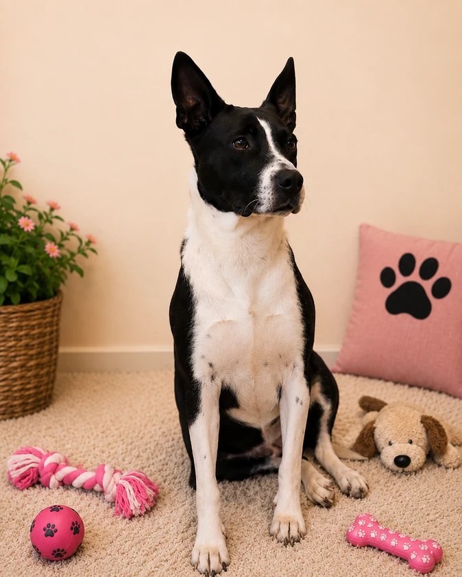

EN ADOPCIÓNZule
Amorosa, leal y fuerte. Venció el TVT y está lista para comenzar una nueva vida con una familia responsable.
- Esterilizada
- Vacunada y desparasitada
- Esquema de salud al día
- Recuperada de TVT
- Compatibilidad con otros animales: confirmar con ARCY
Conocer su historia
Fue encontrada en Xilotzingo, Zumpango, y llegó a ARCY como parte de un protocolo TNR. Durante su estancia fue diagnosticada con TVT (Tumor Venéreo Transmisible). Gracias al tratamiento, los cuidados y su fortaleza logró vencer la enfermedad. Lleva cerca de dos años esperando una familia.